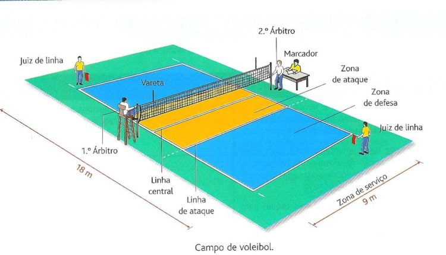

Quadra do Voleibol
A Quadra do Voleibol
A quadra do voleibol possui 18x9 de medidas, e é dividida por uma rede ao meio. A quadra
também é demarcada:
- Linhas de demarcação: são as linhas que delimitam a quadra;
- Linha central: divide a quadra em duas áreas de tamanhos iguais. É onde se
encontra a rede.;
- Linha de ataque: são duas linhas próximas da rede (uma de cada lado da quadra) de
3 metros de largura. É a área que os jogadores atacam e bloqueiam.;
- Linha de restrição do técnico: representa o local onde ficará o técnico do jogo.

Imagem de uma quadra de voleibol